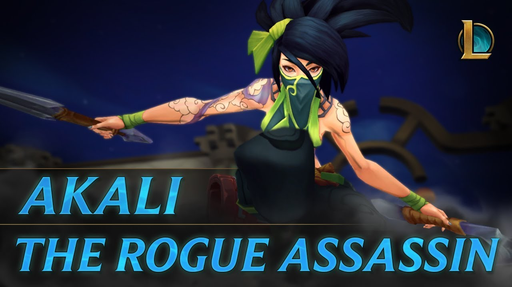

About us
WHAT IS LEAGUE OF LEGENDS?
League of Legends is a team-based strategy game where two teams of five powerful champions face off to destroy
the other’s base.
Choose from over 140 champions to make epic plays, secure kills, and take down towers as you battle your way to
victory.
League of Legends is a 2009 multiplayer online battle arena video game developed and published by Riot Games for
Microsoft Windows and macOS.
Originally inspired by Defense of the Ancients, the game has followed a freemium model since its release on
October 27, 2009. League of Legends is often cited as the world's largest esport, with an international
competitive scene.
The 2019 League of Legends World Championship had over 100 million unique viewers, peaking at a concurrent
viewership of 44 million, with a minimum prize pool of US$2.5 million.

Champions
- Tanks, the most durable class in League of Legends, are divided into vanguards, equipped with
fight-initiating abilities, and wardens, defensive tanks with protective traits. An example of a vanguard is
Malphite, while Braum is a standard example of a warden
- Fighters deal moderate damage, often with melee attacks, and represent a halfway point between tanks
and low-durability champions. They are typically weak to crowd control.The subclasses of fighters are
juggernauts, champions with significant damage potential but limited mobility, and divers, who have high
single-target damage, low area of effect, but are often highly mobile. Darius and Xin Zhao are respectively
examples of juggernauts and divers.
- Slayers are melee champions who can inflict higher and more reliable damage in exchange for lower
survivability. They are split into assassins, offensive-oriented champions with mobility which allows them
to enter and escape a fight, and skirmishers, possessing abilities which allow them to enter a fight and
survive for a longer period of time without escaping. An example of an assassin is Zed, while Fiora is a
standard skirmisher.
- Mages are typically champions with abilities that inflict high amounts of damage with spells from
range. As the class with the largest number of champions, the developer separates mages into three
categories. Burst mages can lock down and kill single targets but struggle against tanks and groups; battle
mages attack from range but their kits enable them to withstand close range fights; artillery mages inflict
high amounts of damage from long range, but are largely immobile and lack access to area-of-effect crowd
control. Examples of burst mages, battle mages, and artillery mages are Lux, Vladimir, and Xerath
respectively.
- Controllers are a spell-focused class with two varieties: enchanters are able to buff allies and lock
down enemies at the cost of doing low damage, while disruptors can hinder the enemy team's movement,
interrupt their actions, and weaken them. Lulu is an example of an enchanter, while Anivia is classified as
a disruptor.
- Marksmen are ranged auto-attackers who stay in the backline, apply consistent damage, and are
equipped to deal with tanks. There are no subclasses of marksmen. Vayne, Ashe, and Sivir are all marksmen.



HOME
Contact
Back to the top